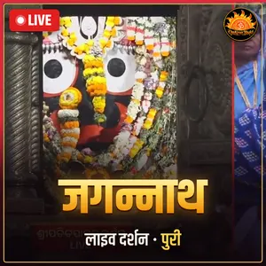

Today's live darshan
Separate Jagannath Puri live darshan page

Source: the YouTube channel “JAY JAGANNATH TV”, a devotional channel that streams the daily rituals of Puri Shreemandir live (not the temple's own). All rights to the video belong to them. Live darshan of all temples
Daily rituals (niti) and darshan timings
| What | Time (approx.) |
|---|---|
| Doors open and Mangala aarti | About 5:00 – 5:30 am |
| Sahana Mela (general darshan, least crowded) | About 7:00 – 8:00 am |
| Gopal Vallabh and Sakal Dhoop (bhog, darshan pauses) | From about 9:00 – 10:00 am |
| Madhyan Dhoop (midday bhog) | About 11:00 am to 1:00 pm |
| Sandhya aarti and Sandhya Dhoop | Evening, about 6:00 – 8:00 |
| Bada Singhar (night adornment) and Pahuda (rest) | About 10:00 – 12:00 pm |
Temple timings follow the daily rituals, not the clock, so different websites list times that differ by half an hour to an hour. On Ekadashi, Purnima, festivals and special vesha (attire) days, the rituals run late and darshan timings change. Before you go, ask the temple administration (SJTA) or a local panda for that day's timings.
Important rules before you go
- Darshan is free: there is no ticket for general darshan. Avoid people selling ‘VIP darshan’ or ‘online booking’ in the temple's name.
- Mobile and camera: mobiles, cameras, bags, umbrellas and leather items (belts, purses, wallets) are not allowed inside the temple. There are free cloak rooms and shoe stands near the Singhadwara.
- Dress code (since January 1, 2024): shorts, half pants, ripped jeans, skirts and sleeveless clothes are not allowed inside. Men should wear a dhoti or kurta-pyjama/trousers and shirt, and women a saree or salwar-kurta.
- Who can enter: by tradition, only Hindus may enter the temple. People of other faiths view the Nilachakra and the temple from the roof of the Raghunandan Library opposite; everyone can have darshan during the Rath Yatra.
- Do not carry any food or drink into the temple; take only the prasad served inside.
- Beware of fake websites: many look-alike websites and WhatsApp numbers sell ‘VIP darshan’ or tickets in this temple's name. Book only through the official website or app given below, and never pay an agent in advance.
The four gates and what to see inside
- Singhadwara (east): the main entrance, facing Bada Danda (Grand Road). The Aruna Stambha stands in front.
- Vyaghra Dwara (west), Hasti Dwara (north), Ashwa Dwara (south): closed after Covid; all four gates reopened for devotees on June 13, 2024.
- Baisi Pahacha: the 22 steps after the Singhadwara, which devotees consider very sacred.
- Ratna Singhasan: in the sanctum sit Lord Jagannath, Balabhadra, Devi Subhadra and Sudarshan.
- Devi Vimala and Maa Lakshmi temples: inside the complex; Mahaprasad is first offered to Devi Vimala.
- Nilachakra and Patitapavana Bana: the ashtadhatu wheel on the spire and the flag that is changed every day.
Mahaprasad and Ananda Bazar
In the temple kitchen (Rosaghara), bhog is cooked in earthen pots over a wood fire. After it is offered to the Lord and to Devi Vimala, this Mahaprasad is available at the Ananda Bazar inside the complex: rice, dal, vegetables, kheer and sweets in earthen pots. It is eaten sitting on the ground, shoes off, together with everyone; no caste distinction is observed in Mahaprasad. Dry prasad (khaja, nirmalya) is also available to take home.
Where to stay
The temple administration (SJTA) runs the Niladri Bhakta Niwas and other guest houses near the temple; they are booked through the administration's accommodation website. There are hotels and dharamshalas for every budget near Swargadwar and the sea beach. During winter holidays and the Rath Yatra, rooms fill up weeks in advance.
How to reach
- Rail: Puri railway station is about 3 km from the temple; direct trains come from Delhi, Kolkata, Mumbai and the south.
- Air: the nearest airport is Bhubaneswar (Biju Patnaik), about 60 km away, about one and a half hours by taxi.
- Road: about 60 km from Bhubaneswar and about 35 km from Konark. Puri bus stand is about 2 km from the temple; take an auto or e-rickshaw for the last stretch.
When is it less crowded
The morning Sahana Mela (about 7–8 am) and the time after 8 pm are usually comfortable. Sundays, holidays, December-January, the Kartik month, Snana Purnima and the Rath Yatra days are very crowded. For about two weeks after Snana Purnima (Anasara period), the Lord does not give darshan in the sanctum. The next Rath Yatra is on July 5, 2027.
Information checked: November 20, 2026. Official website: www.shreejagannatha.in. Temple timings, fees and rules keep changing; always check the official website before travelling or paying.